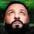

GOD DID
Song by DJ Khaled
Original video

It breaks my heart
They ain't believe in us
We the Best Music
They played themselves
While you hatin' and being jealous
You could be over here embracin' that love
More love, more blessings, more life
GOD DID
You either win with us, or you watch us win
DJ Khaled
They wanted us down, ooh-whoa
But look at us now, oh
They counted us out (time to say a prayer)
They didn't think that we would make it, oh
They didn't believe in us (may we bow our heads)
Oh, but I know God did, God did (oh, yes, He did)
Oh, God did (Khaled)
Oh, yes, God did (Khaled)
Oh, God did (God is great)
But I know God did
Nosedive, they just prayin' that I crash (huh)
Those guys, they don't wanna see you last
They'll jack up three million dollars up on your tax
A tub full of money, I still can't relax
Tires spinnin'
Lord forgive me, I'm a sinner, conquer, divide niggas
Wrong side of the petition, only divine winnin'
Better listen when I tell you how I put time in it
Please, forgive me, God did
So leave me in the dark, swimmin' with the sharks
Dope boy, big calm, still the biggest boss
Got a kilo on a plate, send 'em on a freight
Or I can go and buy a bank, I know my money's safe (Maybach Music)
They counted us out
They didn't think that we would make it, oh
They didn't believe in us
Oh, but I know God did, God did (oh, yes, He did)
Oh, God did (oh)
Oh, yes, God did (oh)
Oh, God did (Mula)
But I know God did (uh)
Sky is the limit, every day I reach
They was tired of me winnin', now they dead sleep
Don't wan' see me with the ring? You better play D
Nigga, God did His thing when He made me
With the odds stacked against me, I could crack Da Vinci
I know only God can judge us, I say that for Brittney
They smell blood like the sharks, they start actin' fishy
Well, I'ma have to act a ass and they gon' have to kiss me
Please, don't hate me just to hate me
Before they overrate me, they gon' underestimate me
Funeral and wake me, bury me and excavate me
But I'm so cultivating, everybody replicate me, nigga, face facts
Dreadlocks, face tats, I'm the apex
I made the culture, what up, twin? Never laid back
I fucked the world and when I did, I practiced safe sex
I pray more and said less, God did the rest
They counted us out
They didn't think that we would make it, oh
They didn't believe in us (it breaks my heart)
Oh, but I know God did, God did (where we at Gu?) (Oh, yes, He did)
Oh, God did (where we at Gu?)
Oh, yes, God did (oh)
Oh, God did
But I know God did
Hov did
Please Lord, forgive me for what the stove did
Nobody touched a billi' until Hov did
How many billionaires can come from Hov crib? Huh
I count three, me, Ye and Rih
Bron's a Roc boy, so four, technically
I left the dope game with my record clean, huh
I turned the cocaína into champagne, huh
I cleaned up la madrina with the same soap, huh
Me and Loro talk 'bout how we slang dope, huh
Now the weed in stores, can you believe this, Ty?
I put my hustle onto Forbes, can you believe this guy? (Nah)
Then we said, "Fuck it, " took the dope public
Out the mud, they gotta face you now, you can't make up this shit
Judge it how you judge it, say we goin' corporate
Nah, we just corner boys with the corner office
I'm at the cap table, what the splits is?
Not that cap table, boy, we live this
Breezy what the business is
We pushin' Fenty like Fentanyl, the shit is all legitimate
E was down ten for this
We just got his ten back then went back like, "Where the interests is?"
Em light up the O3
We let y'all do the zazas, OG for the OGs
Some new niggas out of pocket, talkin' exotic
You barely been to the Baham-, that's another topic
Monogram in my pocket off the red carpet
You see the face I made that night, shit is that shockin'
Odds wasn't great we'd even be alive
Gotta be crazy to y'all, nigga, we surprised
Shit is too much how we grew up
Shit don't even feel real to us (damn)
OG sold to those, you called kingpin
If those your drug lords, then who are we then?
Hov is a real nigga's dream
My only goal, to make a real nigga feel seen
Sometimes, it make a fake nigga hate life
Never my intention, the consequences of my way of life
The way we used to play with life
I'm now careful with the sentences, them only jail bars I like (woo)
I never wanted to be the states custodian (come on)
The laws are draconian (come on, Hov)
For those who married to the life (come on), it's holy matrimony and (come on)
Somehow, I'll out-fox every box they try to throw me in (come on)
With great ceremony and
Folk and 'nem told me how highly Caddy spoke of him
And bloke and 'nem from London, Harold Road, Weston Inn
I be speakin' to the souls of men
Those of them willin' to die for the existence that this cold world has chose for them
Kickin' snow off a frozen Timb (woo)
Back and forth on this turnpike, really took a toll on 'em
Lot of fallen soldiers on these roads of sin
For those who make the laws, I'ma always have smoke for them
I got lawyers like shooters
Workin' pro bono for him as a favor 'cause I throw them Ms
In memory of Teelo
I pray none of your people die over jail phones again
All this pain from the outside
Inspired all this growth within
So new planes gettin' broken in
Highest elevation of the self
They done fucked around and gave the right niggas wealth
These ain't songs, these is hymns 'cause I'm him
It's the Psalm 151, this the New Testament
The book of Hov
Jesus turned water to wine, for Hov, it just took a stove
You never know how this shit could go
Me and Biggs probably got too big if they ain't book that load (what's up Hoffa?)
Hindsight is 20/20
Though he's gettin' plenty money, lookin' back now this shit is funny
I just got a million off a sync
Without riskin' a million years tryna get it out the sink (woo)
Hov big
They said they don't know me internationally, niggas on the road did
I see a lot of Hov in Giggs
Me and Meek could never beef, I freed that nigga from a whole bid
Hov did
Next time we have a discussion who the GOAT, you donkeys know this
Forgive me, that's my passion talkin'
Sometimes I feel like Farrakhan talkin' to Mike Wallace
I think y'all should keep quiet
Breaks my heart, God did
They wanted us down, whoa (come on, man)
But look at us now, oh
They counted us out
They didn't think that we would make it, oh
They didn't believe in us
Oh, but I know God did, God did (oh, yes, He did)
Oh, God did (oh)
Oh, yes, God did (oh)
Oh, God did
But I know God did, God did (oh, yes, He did)
Oh, God did (oh, God did)
Oh, yes, God did (He did)
Oh, God did (yeah)
And you may not believe, but I know God did
Oh, God did (God did)
God did (God did)
Oh
But I know God did
He did it
Oh, He did it, yeah, yeah
God did
God did
God did
Yeah